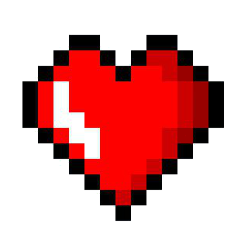

[[fetch]]
files = ["engine.py"]
import js, math, time
from pyodide.ffi import create_proxy
from engine import DoomGame, SCREEN_WIDTH, SCREEN_HEIGHT, CASTED_RAYS, MAP, FOV, MAX_DEPTH
z_buffer = [MAX_DEPTH] * SCREEN_WIDTH
ui_container = js.document.getElementById("ui-container")
status_text = js.document.getElementById("status-text")
restart_btn = js.document.getElementById("restart-btn")
canvas = js.document.getElementById("gameCanvas")
ctx = canvas.getContext("2d")
mm_canvas = js.document.getElementById("minimapCanvas")
mm_ctx = mm_canvas.getContext("2d")
weapon_img = js.Image.new()
weapon_img.src = "images/pistol.png"
enemy_img = js.Image.new()
enemy_img.src = "images/doom_imp.png"
boss_img = js.Image.new()
boss_img.src = "images/boss.png"
health_img = js.Image.new()
health_img.src = "images/health.png"
ammo_img = js.Image.new()
ammo_img.src = "images/ammo.png"
game = DoomGame()
pressed_keys = set()
game.prepare_stage(enemy_img, boss_img, ammo_img, health_img)
is_shooting = False
def restart_game(event):
game.init_game()
game.prepare_stage(enemy_img, boss_img, ammo_img, health_img)
game.score = 0
game.monsters_killed = 0
game.items_collected = 0
ui_container.style.display = "none"
restart_btn.onclick = create_proxy(restart_game)
def on_keydown(event): pressed_keys.add(event.key.lower())
def on_keyup(event):
if event.key.lower() in pressed_keys: pressed_keys.remove(event.key.lower())
if event.key.lower() == ' ':
global is_shooting
is_shooting = False
js.window.addEventListener("keydown", create_proxy(on_keydown))
js.window.addEventListener("keyup", create_proxy(on_keyup))
def get_all_sprites():
"""몬스터와 아이템을 모두 합쳐서 거리순으로 정렬하기 위한 리스트 생성"""
sprites = []
for m in game.monsters:
if m.is_alive:
sprites.append({
"x": m.x, "y": m.y,
"img": m.img,
"type": m.type,
"ref" : m
})
for item in game.items:
if item.is_active:
sprites.append({
"x": item.x, "y": item.y,
"img": item.img,
"type": "ITEM",
"ref" : item
})
return sprites
def draw_minimap():
mm_ctx.clearRect(0, 0, 160, 160)
mm_ctx.save()
mm_ctx.translate(80, 80)
mm_ctx.beginPath()
mm_ctx.arc(0, 0, 80, 0, math.pi * 2) # 중앙(80,80)에 반지름 80인 원 생성. 레이더 중심에 플레이어 고정.
mm_ctx.clip() # 이후 그려지는 모든 것은 이 원 안으로 제한됨 = 기본 사각형 미니맵을 원형으로 자름
mm_ctx.rotate(-game.player_angle - math.pi/2)
GRID_SIZE = 16
WORLD_TO_MM = GRID_SIZE / 50
p_col = int(game.player_x / 50)
p_row = int(game.player_y / 50)
render_range = 7
for r in range(max(0, p_row - render_range), min(32, p_row + render_range)):
for c in range(max(0, p_col - render_range), min(32, p_col + render_range)):
if not game.visited[r][c]:
mm_ctx.fillStyle = "#000"
elif MAP[r][c] == 1:
mm_ctx.fillStyle = "rgba(0, 255, 0, 0.6)"
else:
mm_ctx.fillStyle = "rgba(0, 255, 0, 0.05)"
mm_ctx.fillRect(
(c*50 - game.player_x) * WORLD_TO_MM,
(r*50 - game.player_y) * WORLD_TO_MM,
GRID_SIZE,
GRID_SIZE
)
for m in game.monsters:
m_grid_x, m_grid_y = int(m.x / 50), int(m.y / 50)
if m.is_alive and game.visited[m_grid_y][m_grid_x]:
rel_mx, rel_my = (m.x - game.player_x) * WORLD_TO_MM, (m.y - game.player_y) * WORLD_TO_MM
mm_ctx.fillStyle = "#ff0000"
mm_ctx.beginPath()
mm_ctx.arc(rel_mx, rel_my, 3, 0, math.pi * 2)
mm_ctx.fill()
for item in game.items:
i_grid_x, i_grid_y = int(item.x / 50), int(item.y / 50)
if item.is_active and game.visited[i_grid_y][i_grid_x]:
rel_ix, rel_iy = (item.x - game.player_x) * WORLD_TO_MM, (item.y - game.player_y) * WORLD_TO_MM
mm_ctx.fillStyle = "#ffd700" if item.type == "AMMO" else "#00ffff"
mm_ctx.beginPath()
mm_ctx.arc(rel_ix, rel_iy, 3, 0, math.pi * 2)
mm_ctx.fill()
mm_ctx.restore()
mm_ctx.fillStyle = "#0f0"
mm_ctx.beginPath()
mm_ctx.moveTo(80, 73); mm_ctx.lineTo(76, 85); mm_ctx.lineTo(84, 85)
mm_ctx.fill()
def draw_scene():
global z_buffer
for i in range(SCREEN_WIDTH): z_buffer[i] = MAX_DEPTH
ctx.fillStyle = "#1a1a1a" # 천장
ctx.fillRect(0, 0, SCREEN_WIDTH, 300)
ctx.fillStyle = "#333" # 바닥
ctx.fillRect(0, 300, SCREEN_WIDTH, 300)
wall_results = game.cast_rays()
ray_width = SCREEN_WIDTH / CASTED_RAYS
for i, wall in enumerate(wall_results):
dist = wall['dist']
h = wall['height']
side = wall['side']
start_x = i * ray_width
for x in range(int(start_x), int(start_x + ray_width + 0.5)):
if x < SCREEN_WIDTH:
z_buffer[x] = dist
shade = min(180, dist * 0.4)
color = int(max(50, 255 - shade))
if side == 1:
color = int(color * 0.7)
ctx.fillStyle = f"rgb({color}, {color}, {color})"
ctx.fillRect(start_x, (600 - h) / 2, ray_width + 1.0, h)
sprites = []
for m in game.monsters:
if m.is_alive: sprites.append(m)
for item in game.items:
if item.is_active: sprites.append(item)
sprites.sort(key=lambda s: (s.x - game.player_x)**2 + (s.y - game.player_y)**2, reverse=True)
for s in sprites:
dx, dy = s.x - game.player_x, s.y - game.player_y
dist = math.sqrt(dx**2 + dy**2)
if dist < 10: continue
angle = math.atan2(dy, dx) - game.player_angle
while angle > math.pi: angle -= 2 * math.pi
while angle < -math.pi: angle += 2 * math.pi
if abs(angle) < 1.0:
screen_x = (0.5 * (angle / (FOV / 2)) + 0.5) * SCREEN_WIDTH
idx = int(screen_x)
if 0 <= idx < SCREEN_WIDTH and z_buffer[idx] > dist:
ratio, scale, offset = 1.0, 40, 20
if getattr(s, 'type', '') == "BOSS":
scale, offset, ratio = 80, 20, 0.75
elif getattr(s, 'type', '') == "AMMO" or getattr(s, 'type', '') == "HEALTH":
scale, offset = 18, 50 + math.sin(time.time()*5)*10
s_size = (SCREEN_HEIGHT / dist) * scale
sw, sh = s_size * ratio, s_size
if hasattr(s, 'flash_timer') and s.flash_timer > 0:
ctx.save()
ctx.filter = "brightness(40%) sepia(100%) saturate(2000%) hue-rotate(-50deg)"
ctx.drawImage(s.img, screen_x - sw/2, 300 - sh/2 + offset, sw, sh)
ctx.restore()
s.flash_timer -= 1
else:
ctx.drawImage(s.img, screen_x - sw/2, 300 - sh/2 + offset, sw, sh)
ctx.strokeStyle = "#0f0"; ctx.lineWidth = 2
ctx.beginPath()
ctx.moveTo(SCREEN_WIDTH/2-10, SCREEN_HEIGHT/2); ctx.lineTo(SCREEN_WIDTH/2+10, SCREEN_HEIGHT/2)
ctx.moveTo(SCREEN_WIDTH/2, SCREEN_HEIGHT/2-10); ctx.lineTo(SCREEN_WIDTH/2, SCREEN_HEIGHT/2+10)
ctx.stroke()
if game.ammo <= 0:
ctx.fillStyle = "#ff0000" # 붉은색 경고
ctx.font = "bold 20px Arial"
ctx.textAlign = "center"
# 조준점 중앙(SCREEN_WIDTH/2)에서 약간 위(SCREEN_HEIGHT/2 - 20)에 배치
ctx.fillText("NO AMMO", SCREEN_WIDTH / 2, SCREEN_HEIGHT / 2 - 25)
if weapon_img.complete:
recoil = game.flash_frames * 12
bob_y = math.sin(game.walk_timer) * 10
bob_x = math.cos(game.walk_timer * 0.5) * 6
w_w = SCREEN_WIDTH * 0.25 # 무기 크기 조절
w_h = w_w * (weapon_img.height / weapon_img.width)
ctx.drawImage(weapon_img,
(SCREEN_WIDTH - w_w) / 2 + 150 + bob_x,
SCREEN_HEIGHT - w_h + 20 + recoil + bob_y,
w_w, w_h)
health_percent = int((game.player_health / game.MAX_HEALTH) * 100)
ctx.fillStyle = "#fff"; ctx.font = "bold 22px Arial"; ctx.textAlign = "left"
ctx.fillText(f"❤️ HEALTH: {health_percent}%", 30, 45)
if health_percent <= 30:
ctx.fillStyle = "#ff0000" # 30% 이하일 때 빨간색
elif health_percent <= 60:
ctx.fillStyle = "#ffff00" # 60% 이하일 때 노란색
else:
ctx.fillStyle = "#00ff00" # 그 외 녹색
ctx.fillRect(30, 55, health_percent * 2, 10) # ctx.fillRect(x, y, width, heigth) -> 체력바 크기 조절 참고
alive_count = sum(1 for m in game.monsters if m.is_alive)
ctx.fillStyle = 'rgb(185, 50, 217)'
ctx.fillText(f"👾 MONSTERS LEFT: {alive_count}", 30, 85)
# 화면 높이(SCREEN_HEIGHT)에서 약 40px 위 지점
ctx.fillStyle = "#ffd700" # 총알은 황금색으로 강조
ctx.fillText(f"🔫 AMMO: {game.ammo}", 30, SCREEN_HEIGHT - 40)
draw_minimap()
if game.damage_frames > 0:
ctx.fillStyle = f"rgba(255, 0, 0, {game.damage_frames / 15})"
ctx.fillRect(0, 0, SCREEN_WIDTH, SCREEN_HEIGHT)
game.damage_frames -= 1
if game.flash_frames > 0:
ctx.fillStyle = f"rgba(255, 255, 255, {game.flash_frames / 5})"
ctx.fillRect(0, 0, SCREEN_WIDTH, SCREEN_HEIGHT)
game.flash_frames -= 1
if game.game_state != "PLAYING":
ui_container.style.display = "flex"
if game.game_state == "GAMEOVER":
status_text.innerText = "YOU DIED"; status_text.style.color = "#f00"
else:
status_text.innerText = "MISSION COMPLETE"; status_text.style.color = "#ff0"
if game.game_won:
if game.win_timer < 100:
game.win_timer += 1
alpha = game.win_timer / 100
ctx.fillStyle = f"rgba(255, 255, 255, {alpha})"
ctx.fillRect(0, 0, SCREEN_WIDTH, SCREEN_HEIGHT)
if game.win_timer >= 60:
ctx.textAlign = "center"
ctx.fillStyle = "black" # 배경이 하야므로 글자는 검정색으로
ctx.font = "bold 60px Arial"
ctx.fillText("MISSION COMPLETE", SCREEN_WIDTH / 2, 200)
ctx.font = "25px Arial"
ctx.fillStyle = "#333"
ctx.fillText(f"Monsters Purged: {game.monsters_killed}", SCREEN_WIDTH / 2, 300)
ctx.fillText(f"Resources Found: {game.items_collected}", SCREEN_WIDTH / 2, 340)
ctx.fillText(f"Total Score: {game.score}", SCREEN_WIDTH / 2, 380)
if game.win_timer >= 90:
rank = "SOLDIER"
if game.score > 4000: rank = "DOOM SLAYER"
elif game.score > 3500: rank = "NightMare!"
elif game.score > 3100: rank = "Violence"
elif game.score > 2100: rank = "Hurt Me Plenty"
elif game.score > 1500: rank = "I'm Too Young to Die"
ctx.fillStyle = "red"
ctx.font = "bold 40px 'Courier New'"
ctx.fillText(f"RANK : {rank}", SCREEN_WIDTH / 2, 480)
def main_loop(*args):
global is_shooting
if game.game_state == "PLAYING":
game.update_player(pressed_keys)
if ' ' in pressed_keys:
# pressed_keys.remove(' ')
if not is_shooting:
if not game.ammo:
game.flash_frames = 0
print("No Ammo!")
else:
game.flash_frames = 5
game.attack_monster()
is_shooting = True
else:
is_shooting = False
game.update_items()
draw_scene()
js.requestAnimationFrame(create_proxy(main_loop))
main_loop()